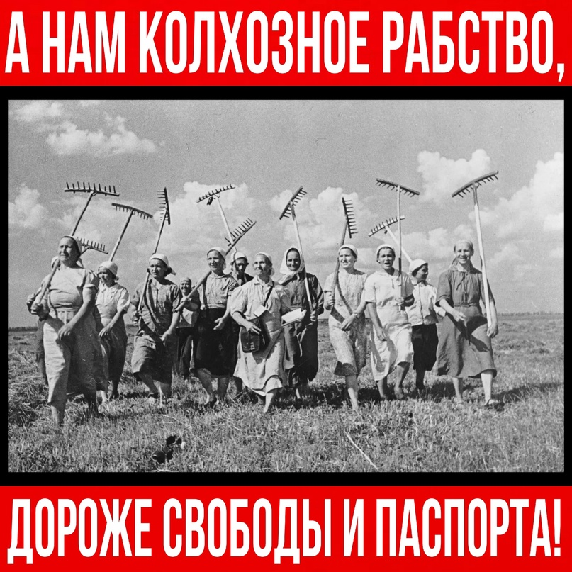

|
|
|
С больной головы на здоровую: как наследственную болезнь российского царизма пытались выдать за миф о «крепостных крестьянах в СССР»

Часть 1 Вот мы и подобрались спустя продолжительное время к теме паспортов для ступивших в колхозы крестьян. Тридцать с лишним лет неискушённых граждан кормят говном с лопаты: колхозники были новыми «крепостными крестьянами», которым советская власть запрещала иметь паспорта. Это очередной миф, который можно легко опровергнуть. ЦЕНТРАЛЬНЫЙ ИСПОЛНИТЕЛЬНЫЙ КОМИТЕТ СССР Это закрепляется в Положении о паспортах от 27 декабря 1932 года: «Гражданам, постоянно проживающим в населенных пунктах, где введена паспортная система, паспорта выдаются без подачи ими заявлений, а гражданам, прибывающим в эти населенные пункты из других местностей, - по их заявлениям». [2] Итак, сельский житель, не имевший паспорта, приезжает жить и работать в город, но предварительно он обязан получить паспорт в местном органе милиции. А что, если сельский житель приехал не насовсем, а просто в гости к родственникам? В этом случае ему паспорт не будет нужен – достаточно временного удостоверения личности, которое выдают в сельсовете. Поскольку ситуация менялась со временем, приведу краткий список важных нормативных актов:
«3. Постоянные жители сельской местности, за исключением местностей, указанных в статье 1 настоящего Положения, проживают без паспортов. При выезде в другие местности СССР за пределы данного района эти лица обязаны получать паспорта в органах милиции по месту жительства, исключение составляют лица, выезжающие сроком до 30 дней, а также выезжающие в санатории, дома отдыха, на совещания, съезды, сборы, в командировки и привлекаемые временно на посевные, уборочные и другие работы». [6] Таким образом, никакого запрета на паспорта для постоянных сельских жителей не было. К тому же, они спокойно могли уезжать на отдых или в командировку без паспорта. Но современная антисоветская пропаганда и антикоммунистические ресурсы упорно рассказывают дичь о «крепостных в СССР». Часть 2 Рассмотрим данные паспортизации.
Советские документы свидетельствуют о том [8], что с 1933 г. по 1940 г. было выдано 112 миллионов паспортов. Вы можете спросить, кто эти люди, если городское население согласно ранее предоставленным данным по урбанизации составляло всего 60 миллионов человек? Вот тут нужно посмотреть на вторую графу: 52 миллиона из 112 миллионов паспортов были годичными, то есть временными. Как мы выяснили в предыдущей части, именно такие выдавались крестьянам, которые ездили, например, в город на «сезонные» работы. Ещё одно доказательство, что невозможность крестьянина получить паспорт – подлая выдумка. Заключительную жирную точку в этом вопросе ставит сам товарищ Сталин в своей речи, произнесённой в 1939 году: «Отпускать нам для растущей промышленности ежегодно хотя бы около полутора миллиона молодых колхозников. Колхозы, ставшие уже зажиточными, должны иметь в виду, что без такой помощи с их стороны очень трудно будет расширять дальше нашу промышленность, а без расширения промышленности – не сможем удовлетворять растущий спрос крестьян на товары массового потребления». [9] Такая вот «крепостная» жизнь была у советских крестьян. Часть 3 Если кому-то этих доводов мало, пожалуйте за добавкой. Перенесёмся в 1938 год, и внимательно ознакомимся с Постановлением «Об упорядочении дела набора рабочей силы из колхозов». Здесь мы можем прочитать, к примеру, это: «…в результате плохой постановки набора рабочих со стороны наркоматов имеются многочисленные случаи, когда в один и тот же район и в одну и ту же область посылаются десятки, а зачастую и сотни представителей хозяйственных организаций для набора рабочих. Все это создает ажиотаж в наборе новых рабочих, порождая нездоровую конкуренцию между различными организациями. Нередко дело доходит до того, что завербованные рабочие, которым уже выданы авансы, переманиваются другими организациями, которые, в свою очередь, дают им новые авансы. В результате этого срывается набор новых рабочих кадров у большинства хозяйственных организаций». Далее следует подробное описание, как этот процесс упорядочить и сделать максимально эффективным: «б) в необходимых случаях оплату суточных за время проезда набранных рабочих от места жительства до места работы производить в следующих размерах: во все районы СССР, кроме ДВК (Дальне-восточный край Прим. адм.), - 6 рублей в сутки, а в ДВК - 9 рублей в сутки; в) разрешить выдавать набранным рабочим аванс в счет заработной платы в размере 100 рублей, из них: 50 рублей - на месте заключения договора и 50 рублей - по прибытии их на место работы, с удержанием этого аванса в течение двух месяцев работы; строительствам (предприятиям), находящимся в ДВК, разрешить выдачу аванса на тех же условиях в размере 200 рублей;». [10] Действительно интересно, как объяснят сторонники мифа о так называемом «закрепощении» тот факт, что советским крестьянам, «всеми правдами и неправдами стремящимся вырваться из опостылевшей деревни», приходилось ещё и доплачивать, чтобы они это сделали? Да, среди колхозников было материальное расслоение. Однако причиной этого был не марксизм или коммунизм, а слабые на тот момент производительные силы. Строительство коммунизма в отсталом крестьянском обществе, которое тогда практически не знало механизации и обрабатывало землю так же, как тысячу лет назад, было архисложной задачей. Источники: 1) Постановление от 27 декабря 1932 г. N 1917 "Об устранении единой паспортной системы по
Союзу ССР и обязательной прописки паспартов" (19 стр.). |
|
Красный Ёж |
Статьи: | Мы в соцсетях
|